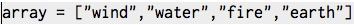
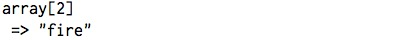
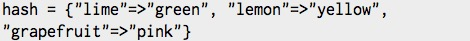
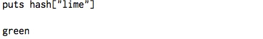

DBC Phase 0, Week 3
Arrays and Hashes
January 12, 2015
As this week comes to a close, it's time to reflect on what I've learned. A big chunk of this week's material covered the classes Array and Hash, so I'm going to dedicate this post to both. While the two are similar, there are some notable distinctions.
An array can be defined as an integer-ordered collection of objects in Ruby. When we say that an array is integer-ordered, we mean that each object within an array has an integered index—0 being the first index in an array, 1 being the second, etc. Because arrays are integer-ordered, we can call an object within an array using an integer.
Example:
Let's say we have the following array:

If we wanted to look up the third object in the array is, we can call it:

If there is no object at a particular index, then the array will just return nil. Let's see what happens when we try to look up the 4th index of the array above:

Like an array, a hash is also a collection, but rather than it being indexed with integers, objects are stored via key-value pairing, where the key indexes the value. Hence, unlike arrays, hashes are not limited to integer indexes. Example: Let's take a look at the hash below.  The keys are lime, lemon, and grapefruit, which are paired with the values green, yellow, and pink respectively. If we wanted to print the value of lime, we would just write: 
Given the differences between arrays and hashes, there are select occasions where you may want to use one over the other. For example, if you're working with a data set and you don't care what the indexed object is, just that you call whatever object is at that position, an array would work best, especially if there is considerable manipulation to the array (add, removal, etc.). However, if you want to call a specific object in a large data set, regardless of order, then a hash is the way to go.